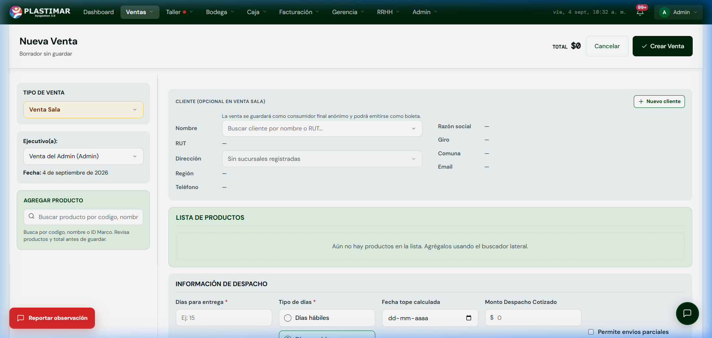

1. Tu Rol en el ERP Plastimar
Fuerza ComercialComo ejecutivo de ventas, eres el punto de partida de la operación. La venta queda visible en la Matriz y puede activar el tratamiento de Taller para productos transitorios, pero Despacho, Cobranza y Facturación conservan acciones y verificaciones propias.
Tu Misión Principal
Registrar con total exactitud el canal de venta, seleccionar adecuadamente al cliente, cotizar con los plazos reales de entrega acordados y dar seguimiento a los pedidos de tus clientes en la Matriz de Ventas.
2. Los Canales de Venta en Plastimar
Reglas de NegocioAl crear una venta, el sistema te pedirá definir el Tipo de Venta. Cada uno tiene reglas específicas:
| Canal de Venta | Público Objetivo | Manejo del Cliente | Regla de Precios |
|---|---|---|---|
| Venta Sala / Mostrador | Clientes presenciales o de mesón en sucursal. | Opcional: Si no tiene RUT, queda bajo Consumidor Final (Boleta). | Precio sala estándar (Costo + margen sala + IVA). |
| Convenio Marco | Instituciones públicas vía Mercado Público. | Obligatorio: RUT institucional y número de OC pública. | Precio fijado por Convenio Marco ChileCompra. |
| Licitación | Grandes propuestas públicas o privadas adjudicadas. | Obligatorio: Ficha de cliente y número ID de Licitación. | Precio de oferta adjudicada según propuesta. |
| Trato Directo / Compra Ágil | Instituciones públicas fuera de convenio con montos acotados. | Obligatorio: RUT institucional y cotización formal aprobada. | Margen negociado autorizado según tramo. |
| Venta Web / Online | Pedidos ingresados directamente desde la tienda digital. | Datos capturados automáticamente desde el checkout online. | Precio web publicado en la plataforma pública. |
3. Paso a Paso: Cómo Crear una Nueva Venta
Procedimiento OperativoPara ingresar una nueva venta, haz clic en el botón Ventas → + Nueva Venta en la barra superior. A continuación, revisa cada una de las zonas del formulario:

Elegir el Tipo de Venta y Ejecutivo
En el panel izquierdo, selecciona el tipo de venta (por defecto Venta Sala) y verifica que esté asignado tu nombre como ejecutivo comercial.
Asignar el Cliente (o dejarlo para Consumidor Final)
Escribe el nombre o RUT en el buscador de clientes. Si el cliente ya existe, se cargarán de inmediato su Razón Social, Giro, Comuna y Teléfono.
Venta rápida en mesón: No pierdas tiempo creando clientes ficticios
Si corresponde a una Venta Sala de consumidor final, deja el campo de cliente en blanco. No crees una ficha ficticia. Para otros canales selecciona el cliente y completa los antecedentes solicitados.
Buscar y Agregar Productos
Usa la barra "Buscar producto por código, nombre o ID Marco" en el panel izquierdo. Al seleccionar un producto, se agregará a la lista central donde podrás ajustar la cantidad.
¿Qué pasa si no hay stock físico? Confirma si el producto está configurado como transitorio/fabricable. Esos productos pueden generar tratamiento hacia Taller; revisa la bandeja y usa Pasar a Taller cuando corresponda. No prometas una fecha sin verificar el estado.
Definir Plazos y Condiciones de Despacho
En la sección inferior Información de Despacho, digita los días para entrega (ejemplo: 15 días) y marca si son Días hábiles o Días corridos. El sistema calculará la Fecha tope de forma automática.
Si el cliente acepta entregas parciales a medida que los productos salgan del taller, marca la casilla Permite envíos parciales.
Revisar y Guardar
Verifica el TOTAL en la esquina superior derecha y presiona el botón verde ✓ Crear Venta. La orden quedará confirmada e ingresará a la Matriz de Ventas.
4. Controles y excepciones de Marcha Blanca
Antes de confirmar- Licitaciones y Compras Ágiles se crean desde CRM y se convierten en venta sólo al aprobarse.
- Revisa correo de despacho, dirección, plazo, canal, cliente, cantidades, total y autorización de descuento.
- Si la pantalla demora, busca la venta en Matriz antes de volver a crearla.
- Con pagos, entregas o DTE registrados, no reconstruyas ni anules para evitar un bloqueo: escala el caso.
Qué no ocurre automáticamente
Crear la venta no programa la ruta, no emite el DTE y no registra el pago. Cada área debe completar su etapa.
5. Tu Centro de Control: La Matriz de Ventas
Seguimiento DiarioLa Matriz de Ventas (menú superior Ventas → Matriz Ventas) es donde controlas el estado de todos tus pedidos en tiempo real:

Cómo responder a tu cliente en 10 segundos
Si un cliente te llama para consultar por su pedido, no necesitas llamar a bodega ni bajar al taller. En la Matriz de Ventas busca por su RUT, nombre o número de OT:
🟡 Estado "En Taller"
Significa que el taller de confección o corte está trabajando el producto. Puedes ver la fecha comprometida de entrega en pantalla.
🟠 Estado "En Packing / Despacho"
El producto ya fue fabricado y controlado en calidad. Bodega está armando los bultos o cargando el camión de reparto.
🟢 Estado "Entregado"
El cliente ya recibió la mercadería con su respectiva Guía de Despacho firmada en terreno.
¿Detectaste un error o falta un dato en una venta?
Durante esta marcha blanca, si un precio no coincide con el acuerdo comercial o el sistema arroja una alerta inesperada, no improvises:
Haz clic en el botón rojo [Reportar observación] en la esquina inferior izquierda. Describe brevemente qué sucedió y nuestro equipo de desarrollo lo revisará de inmediato.